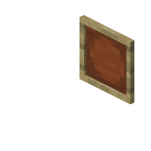

Emoldure as suas tarefas
Manter um registo do que precisa de ser feito em casa já não precisa de ser um bicho de sete cabeças — nem de lhe pôr os cabelos em pé. Distribua tarefas, acompanhe o progresso, analise o trabalho e partilhe com todos na casa. Chega de sobrecarga mental para uma só pessoa. Quer seja dar comida ao cão, regar as plantas, passar o aspirador atrás do sofá ou organizar a noite de jogos em família, pode finalmente ter tudo num só sítio. A sua família (e as suas plantas) vão agradecer.
Sobre nós
Este projeto foi desenvolvido por três colegas do curso de Software Developer.
Nenhum de nós tinha background de programação, nem sabíamos bem porque nos inscrevemos no curso, mas, ao longo do mesmo, arrependemo-nos várias vezes.
O Carlos tinha 32 anos e é engenheiro aeronáutico (sempre com a cabeça no ar);
O Arthur tinha 18 anos, tendo terminado o secundário em Ciências e Tecnologias;
E o João tinha 37 anos e fazia muita coisa, mas nenhuma delas era com computadores, tendo tido o seu primeiro PC apenas três anos antes.
Pegámos numa ideia do João, de uma app de gestão de tarefas da casa pensada por e para pessoas neurodivergentes e, uma vez que nos tocava a todos esta questão de forma pessoal, avançámos, sem, no entanto, termos ideia do trabalho que nos esperava.
Em honra do nosso elemento caçula, escolhemos o tema do Minecraft, jogo também ele muito popular entre pessoas ND, e, com o mínimo de seriedade possível, metemos mãos à obra.
Mas calma: eram três pessoas com dificuldades de gestão de tempo e de tarefas a fazer uma app de gestão de tarefas? Como não correr bem? Todos com ideias megalómanas que não fazíamos a mínima ideia de como concretizar.
Foram noites sem dormir, muitas lágrimas e sofrimento. É preciso ser doente para fazer uma coisa destas, mas, felizmente, doenças mentais não faltavam no grupo.
Mas, se estás a ler isto, é porque conseguimos.
Parabéns a nós.
Ass.: JS, AO, CG
P.S.: Uma vez que somos todos uma cambada de rookies, este site e respetiva app estarão em constantes melhoramentos até que estejamos satisfeitos com o resultado final (que vai ser nunca, não fôssemos nós... nós).
P.P.S.: Esperamos ter conseguido ir ao encontro das necessidades de pessoas como nós, e que vos ajude de alguma maneira.